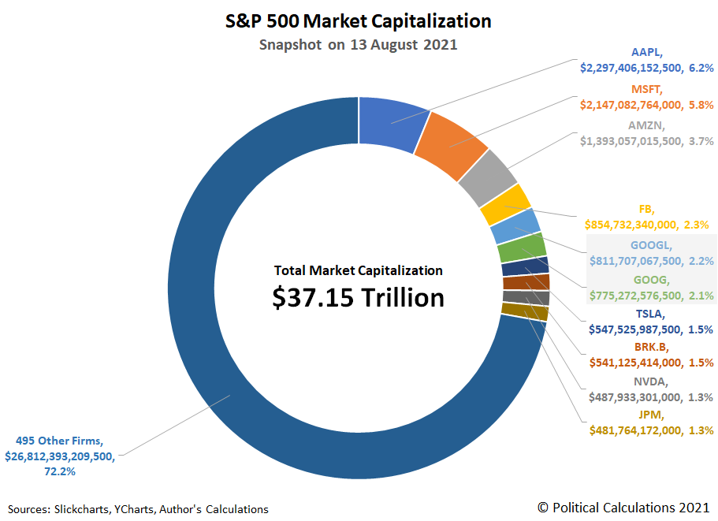

|
September 26, 2021 First published on September 29, 2020 Is the stock market over-exposed to the tech giants? The five tech giants Apple, Microsoft, Amazon, Google and Facebook now account for more than 20% of the entire US stock market capitalization. This concentration of value leads financial advisors to argue that investors holding the market portfolio are poorly diversified because they are over-exposed to a handful of tech companies (an example of this view here). The textbook recommendation of finance theory (such as the CAPM, which students currently taking Financial Economics will soon learn about) is that investors should buy the market portfolio. Does this logic break down when one sector represents a very large share of the overall market? The answer is no. While it is true that the market portfolio has a large exposure to the tech sector and the tech giants, this happens because tech represents a growing share of economic activity. Therefore, a portfolio representative of the real economy should have a large exposure to the tech sector. Moreover, stock prices are forward looking. It means that the market capitalization of the tech giants is determined not just by their current importance in the economy but also — and in fact mostly — by expectations about their future importance in the economy. This explains why tech accounts 20% of the stock market even though it does not yet account for 20% of GDP. To be sure, saying that a well-diversified portfolio should put a large weight on a handful of large companies does not mean that large and dominant tech companies are good for the economy and for society. The GAFAM raise serious concerns of market power, data privacy and misinformation. Instead, the point is that, taking the composition of the market as given, the advice that investors should hold the market portfolio remains valid even if market value is very concentrated. Posts on related topics Were stock prices too high before Covid-19? Did the stock market over-react to Covid-19? Comments You can leave a comment and ask questions by emailing me. I will post the comments here (with your consent) and try to provide answers. |